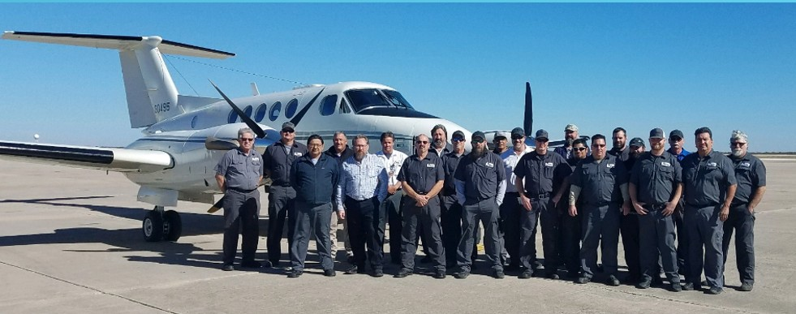

V2X FAA Repair Shop
Home
San Angelo
Contact
King Air Modification Center
Complete modification and upgrade services for King Air aircraft

Airfield and Hangar Information
•
Our Modification and Maintenance Center is a 12,000 sq. ft. modern facility, constructed in 2006, located in San Angelo, TX (SJT).
•
Additional 12,000 sq. ft. hangar leased, used for overflow and modifications.
•
Vertex Modification and Maintenance Center is a Part 145 FAA Certified Repair Station.
•
San Angelo weather allows for 340 VFR flying days and maintains three certified GPS runways, the longest over 9000 feet.
•
The airfield maintains 24/7 fire and security departments.
•
Aviation Weather - San Angelo
•
AOPA Airport Information - KSJT
Operational Support
Flight Operations
•
Ferry flights, FCF, and AOG Repairs
OEM
•
TEXTRON, Accomplished STC installations
Field Support TDY's
•
FAR 91.411 & 413, Part 43 app E & F
•
24 Month ADC and Transponder recertification's
•
Sheet metal repairs
•
Avionics troubleshooting & repair
← Back to San Angelo
Request a Quote